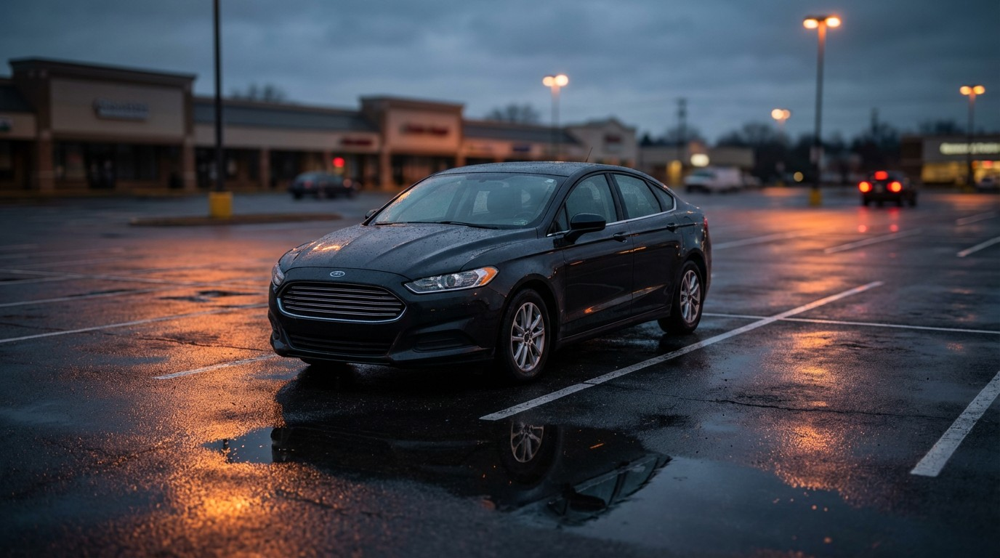

The Ford Fusion Was the Safest Midsize Sedan in America. Ford Killed It Anyway.

Before you sign that lease, you might want to see this. The Ford Fusion — the sedan so unremarkable that even Ford got bored of making it — had a death rate of 1.23 per 100 million vehicle miles traveled. The Toyota Camry, the car everyone buys because they think it’s safe? 2.03. The Honda Accord? 3.07. The boring Ford was the safest midsize sedan in America by a comfortable margin, and nobody cared.
The numbers across the segment are damning for the “buy Japanese for safety” conventional wisdom:
| Vehicle | Deaths | Fleet | Rate | Impairment |
|---|---|---|---|---|
| Ford Fusion | 2,168 | 1.53M | 1.23 🟢 | 19.4% |
| Hyundai Sonata | 1,887 | 1.05M | 1.56 | 20.4% |
| Toyota Camry | 6,328 | 2.71M | 2.03 | 19.2% |
| Chevy Malibu | 3,465 | 1.49M | 2.03 | 20.7% |
| Nissan Altima | 4,787 | 1.44M | 2.88 | 20.0% |
| Honda Accord | 7,102 | 2.01M | 3.07 🔴 | 20.0% |
Look at the impairment column. It’s a flat line — 19.2% to 20.7% across every car in the segment. These are the same drivers making the same decisions on the same roads. The only variable is what sheet metal surrounds them when things go wrong.
The Fusion’s secret was hiding in plain sight: Ford’s CD4 platform — shared with the Lincoln MKZ and later the Edge — was genuinely over-engineered for its class. It earned IIHS Top Safety Pick+ for five consecutive years (2013–2017). The 2017 model scored “Good” in every IIHS crash test, including the brutal small overlap front. Ford just never made safety the marketing story. It was always “Fusion Hybrid” or “Fusion Sport” — never “Fusion: statistically less likely to kill you than a Camry.”
The Accord, at the other end, has been the deadliest sedan in America by total body count for years. At 3.07 per 100M VMT, it kills at 2.5× the rate of the Fusion despite being universally recommended as a “safe family car.” The Accord’s impairment rate is 20.0% — nearly identical to the Fusion’s 19.4%. Same behavior, radically different outcomes.
Ford discontinued the Fusion after the 2020 model year to chase crossover margins. The last ones rolled off the Hermosillo, Mexico line in July 2020. Since then, Ford’s midsize sedan customers have been shoved toward the Escape and Bronco Sport — both of which have higher death rates in their respective segments.
The Fusion proved that a domestic manufacturer could build the safest car in the most competitive segment in America. Then it proved something else: safety doesn’t sell. Brand perception does. And Ford’s brand perception was never “the safe sedan.” That honor belonged to Toyota — which, per the data, didn’t earn it.
Sources
- NHTSA Fatality Analysis Reporting System (FARS), 2014–2023. All fatality counts, rates, and impairment data derived from FARS final and preliminary files.
- National Household Travel Survey (NHTS), U.S. Department of Transportation. Vehicle miles traveled (VMT) estimates based on annual per-vehicle averages by class.
- Fleet size estimates derived from cumulative U.S. vehicle registrations reported via IHS Markit / S&P Global Mobility registration data and NHTSA Vehicle Identification Number (VIN) decoding.
- IIHS: 2020 Ford Fusion — Top Safety Pick+. Good ratings in all crashworthiness tests.
- IIHS: 2020 Toyota Camry and 2020 Honda Accord for segment comparison.
- Death rates calculated as fatalities per 100 million VMT. Impairment defined as BAC > 0.00 g/dL or positive drug toxicology per FARS Person file coding. See Methodology for full caveats and limitations.